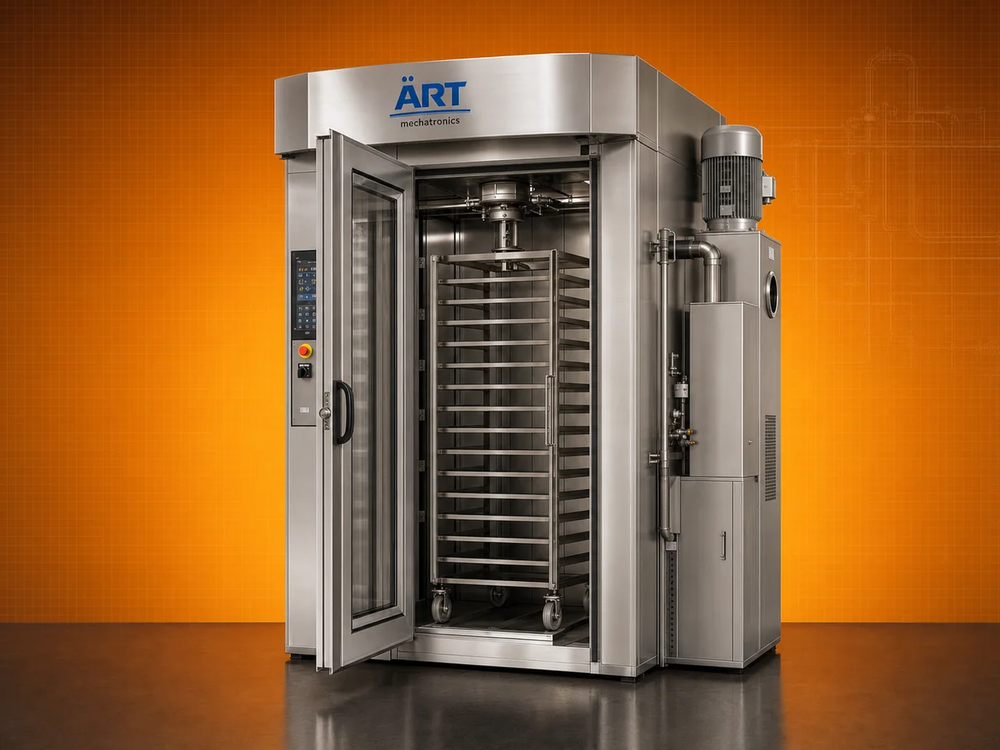

Rotary Rack Oven Machine (Industrial Bakery Oven for Uniform Baking & Large Batch Production)
A Rotary Rack Oven, also known as a Rack Oven Machine or Industrial Bakery Oven, is a high-efficiency baking system designed for uniform baking of bread, biscuits, cakes, cookies, and other bakery products using a rotating rack and hot air circulation technology.

About the Rotary Rack Oven
In this system, trays are loaded onto a rotating rack inside the oven chamber, ensuring even heat distribution across all products, resulting in consistent baking quality, color, and texture.
Rotary rack ovens are widely used in commercial bakeries, biscuit manufacturing units, cake production plants, and large-scale food processing industries, where high capacity and uniform baking are critical.
ART Mechatronics offers advanced rotary rack ovens, engineered for precision baking, energy efficiency, and reliable industrial performance.
One machine, many names
Buyers search for this equipment under many terms — we manufacture all of them:
Working Principle of Rotary Rack Oven
Eliminates uneven baking
Types of Rotary Rack Ovens
Industries Using Rotary Rack Oven
🍞 Bakery Industry
- Bread production
- Buns and loaves
🍪 Biscuit & Cookie Industry
- Cookies and biscuits
🎂 Cake Industry
- Cakes and pastries
🍩 Food Processing Industry
- Baked snacks
🏭 Commercial Kitchens
- Large-scale baking
Features & Advantages
- Uniform baking across all trays
- Rotating rack for even heat distribution
- High batch capacity
- Energy-efficient operation
- Precise temperature control
- Suitable for wide range of bakery products
- Durable and hygienic design
Technical Highlights
- Capacity: Based on number of trays / racks
- Heating Type: Electric / Diesel / Gas
- Temperature Range: Adjustable
- Construction: Mild Steel / Stainless Steel
- Control System: Manual / PLC-based
- Airflow System: Forced convection
Turnkey Bakery Oven Solutions
ART Mechatronics offers:
- Complete bakery setup solutions
- Rotary rack oven supply
- Integration with dough processing systems
- Installation & commissioning
- After-sales service & AMC
Why Choose Art Mechatronics
- Expertise in bakery processing systems
- Customized solutions for bakery industries
- High-performance and durable machines
- Energy-efficient designs
- Proven performance across applications
Applications
- Commercial Bakeries
- Biscuit Manufacturing Units
- Cake Production Units
- Food Processing Plants
- Industrial Kitchens
Industries that use the Rotary Rack Oven
Get pricing & specs for the Rotary Rack Oven
Share the product, target capacity, current process and plant location. These details help our engineers discuss the right machine or line configuration.
One partner, from design to start-up
ART Mechatronics designs, manufactures, installs and commissions your Rotary Rack Oven solution with regional presence in India, UAE and Thailand.